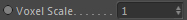
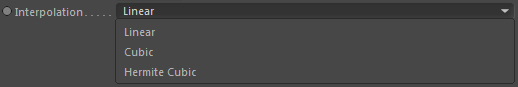
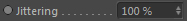
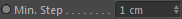
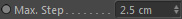
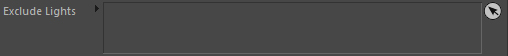

General
Voxel Scale

The Gas Renderer is a voxel renderer. It uses channel grids
and therefore its resolution is bound to the Global voxel size of the
Effex scene that these channels belong to.
In order to get smoother results or to have more resolution
for modifications at render time (such as render advection and noises applied
in precomputation stage) you can scale the resolution (i.e. the voxel size of the channels used).
This will resample the channel grids to that higher resolution.
A voxel scale of 2.0 will rescale the voxel size to double the resolution (half the voxel size!).
Only in rendering
This setting belongs to the Voxel Scale setting.
It will allow the voxel scale setting only to be applied during rendering and not in the material preview
(simply in order to have a better performance in the preview).
Interpolation

Defines the interpolation used when resampling any used channel grids due to the Voxel Scale setting.
Linear
Simple trilinear interpolation. Fast but of simple quality.
Cubic
Cubic interpolation. This is a more accurate interpolation type
and its result is a little fluffy.
Hermite Cubic
Cubic interpolation with a limiter that can catch details more sharply
but is also slower.
Jittering

The rays that the shader marches along could end in banding artefacts if a big step lengths are used.
This jitters the ray in order to get rid of banding. It gives a more noisy result
which is not as troubling to the viewer as the banding and it can be smoothed in compositing by noise reduction.
Min. Step

The minimum step length that should be used during adaptive ray marching.
Max. Step

The maximum step length that should be used during adaptive ray marching
and also the starting step length.
Interpolation
Defines the interpolation used during rendering.
Linear
Simple trilinear interpolation. Fast but of simple quality.
Cubic
Cubic interpolation. This is a more accurate interpolation type
but its result is a little fluffy.
Hermite Cubic
Cubic interpolation with a limiter that can catch details more sharply
but is also slower.
Precise Integration
The light equations for a participating media and all the absorption and scattering integration
is more precise with this (trapezoidal) integration and results in sharper effects.
Exclude Lights

Any lights you would like to exclude can be dropped here.